MCA
The third and last method of the Multivariate
Analysis submenu is the multiple correspondence analysis. This
analysis can take both nominal and ordinal categorical variables as
active variables. The data used here is the gmo data set provided with
the MEDA module.

The interface
The overall structure of the MCA GUI is the same as the other two
Multivariate Analysis methods in MEDA.
Variables selection

The selection of the variables in the MCA is the same as the PCA
which means that you have the individual labels, the active variables
and the supplementary variables. The only difference is that the active
variables in the MCA are qualitative and not quantitative like in the
PCA.
The ventilation level
The Ventilation level option let you fix
the proportion under which a category will be ventilated. In other
terms, it let you choose the threshold under which a category will be
randomly assigned to another category. This option prevent rare
categories to impact strongly the analysis.
Graphic options
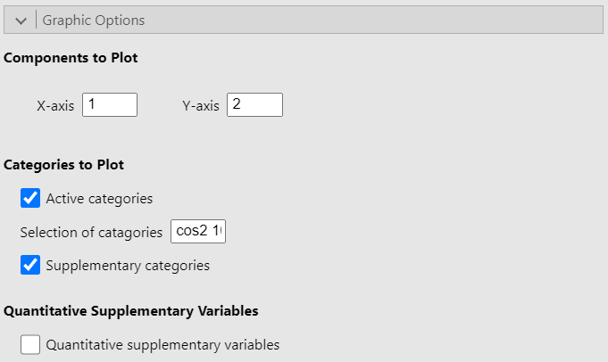
The Graphic options allow you to choose which dimensions to plot. It also let you choose whether to plot either or both active and supplementary categories as well as to plot the correlation circle for the quantitative supplementary variables. Finally, the option Selection of categories highlight a set number of categories based on a criterion. In the figure above, the option is set to “cos2 10” so that the 10 categories with the largest sum of square cosine on the plotted dimensions are highlighted on the graph. However, the square cosine is not the only criterion you can use. The other criteria are:
“coord x”: highlight the x categories with the largest sums of the square coordinates on the 2 dimensions
“contrib x”: highlight the x categories with the biggest contributions on the 2 dimensions
“dist x”: highlight the x categories with the highest distances to the center of gravity
Numerical indicators
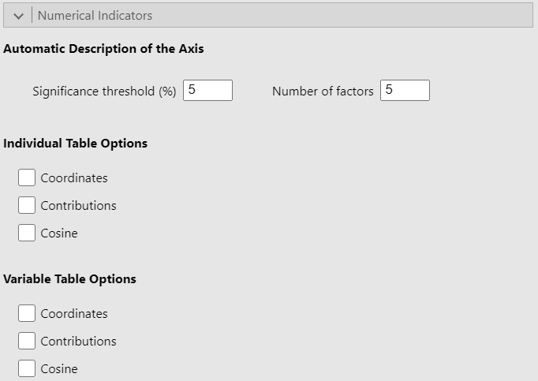
Since this part of the interface is identical in the PCA and CA GUIs
and given that it has already been covered in the PCA guide, we recommend that
you read the explanation there.
Potential issue(s)
Incorrect number of factors
The Number of factors option must be less
than or equal to the number of active variables selected. Otherwise, the
analysis will produce an error.
Example
For this example, we use the gmo data set. We put the 10 first
variables in the Active Variables (>1) field and set the
rest as categorical supplementary variables. Since the gmo data set
doesn’t have any quantitative variable, we simulated two dummy variables
and added them as supplementary quantitative variables. See the figure
below for the settings:
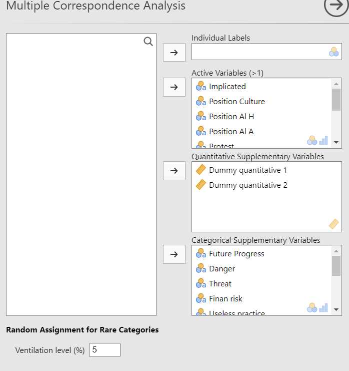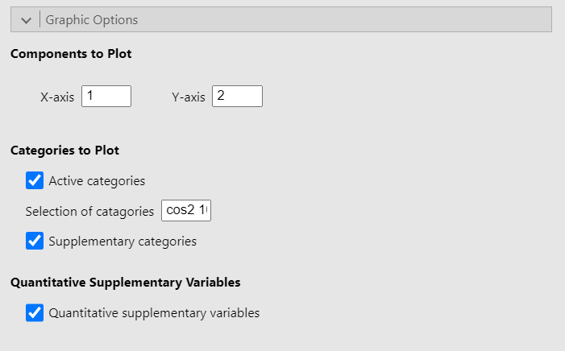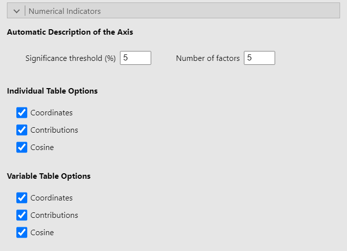
Representation of the individuals

Representation of the variables
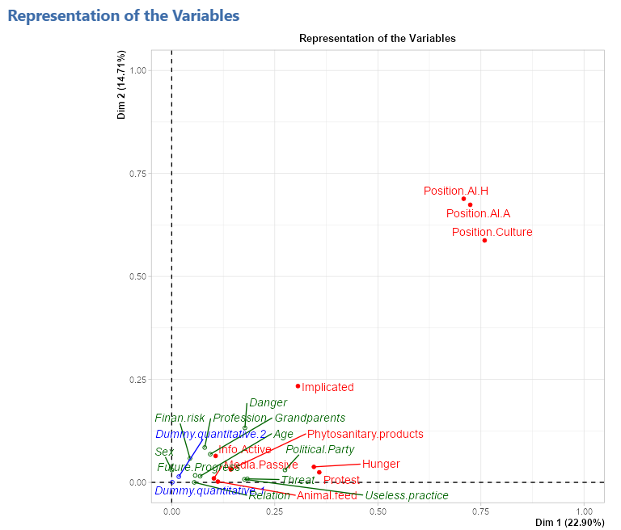
Representation of the categories
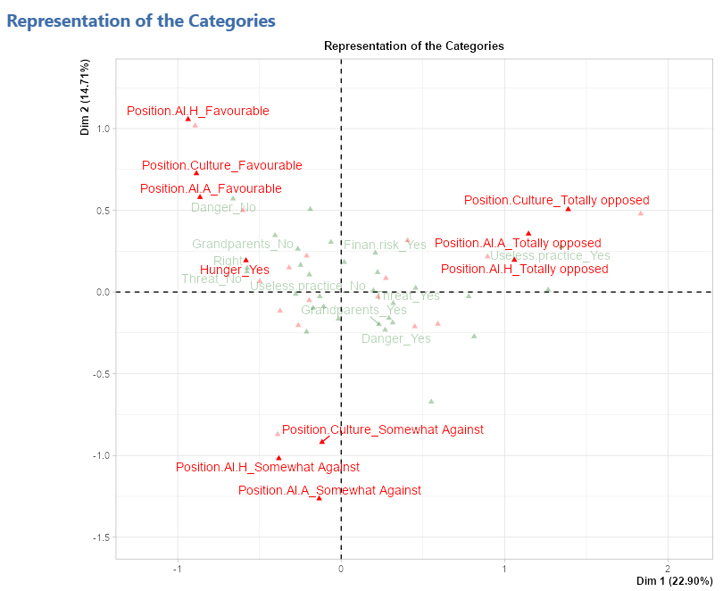
Representation of the quantitative supplementary variables
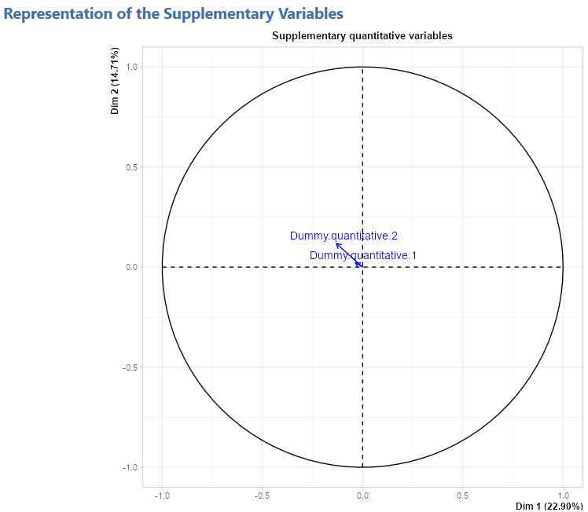
Eigenvalue table
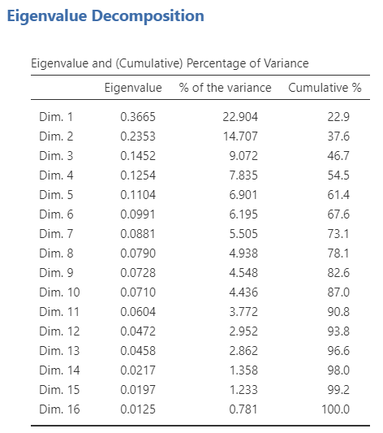
Description of the axes
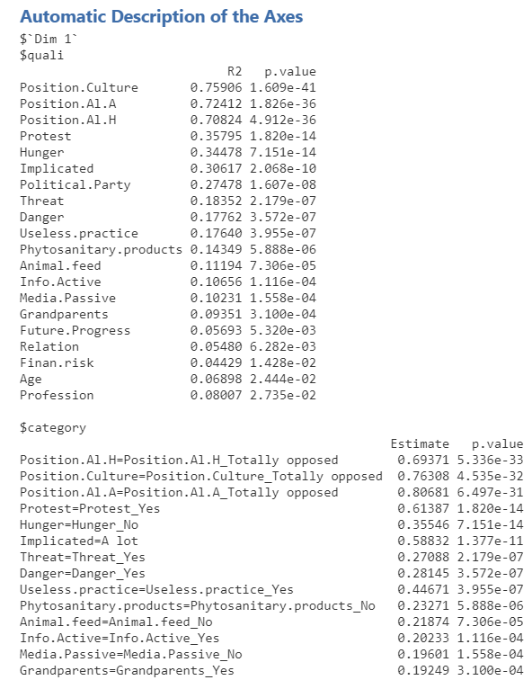
Individual tables
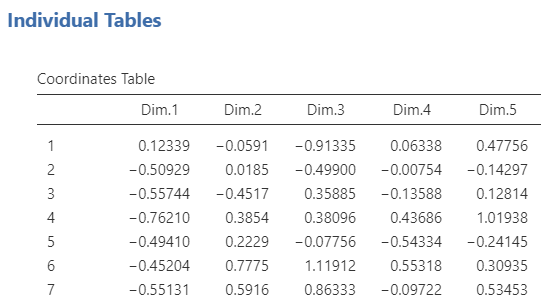
Variable tables
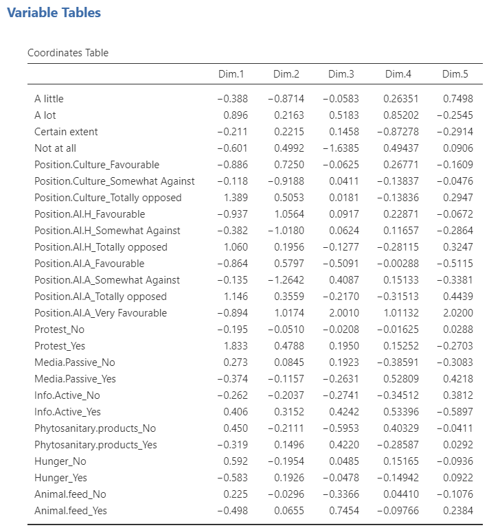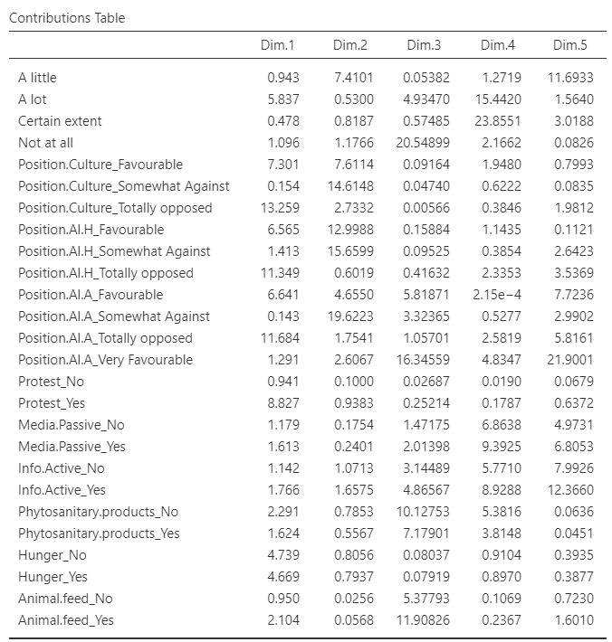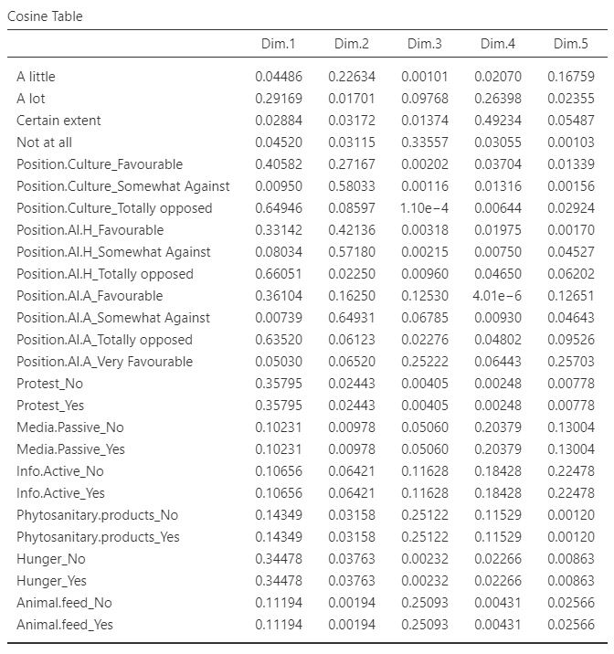